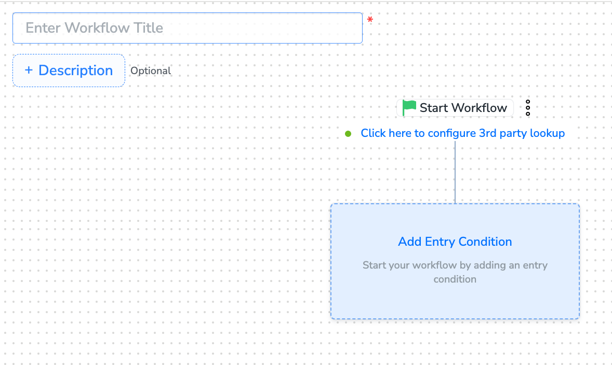
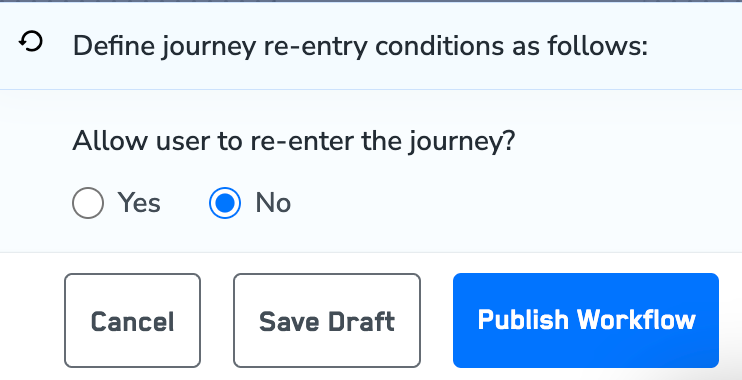
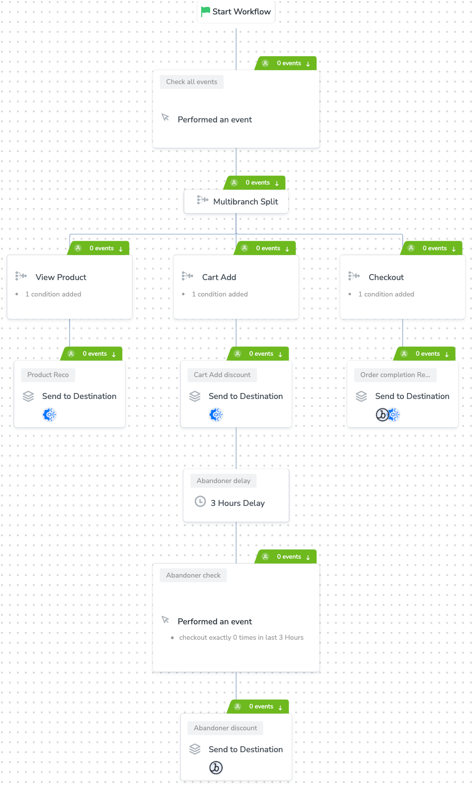

Perform the following steps to create and publish a workflow in Journeys:
Begin by adding an entry condition and providing the basic details, such as the Workflow Title and Description.

Perform Actions in Workflow Creation. The following actions are available during workflow creation:
After adding conditions and filters for users, choose one of the following options:
After defining the re-entry criteria, click Publish Workflow. The workflow appears in the Workflow Listing screen with a Published status.

